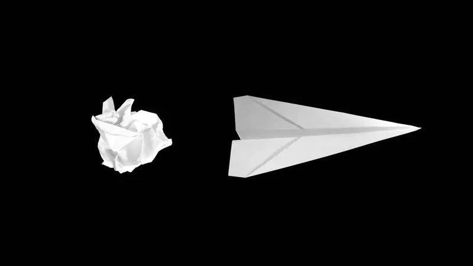
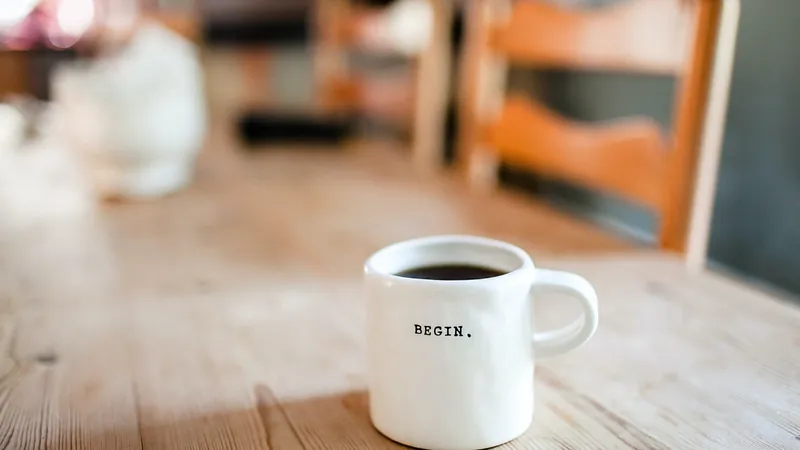

TEKEX Health Innovation Jersey
TEKEX Health Innovation Jersey will be remembered by the TEKEX team and ecosystem as a milestone; a milestone for growth, a milestone for awareness…
Event write-ups, founder stories and practical thinking from across the TEKEX network.
TEKEX Health Innovation Jersey will be remembered by the TEKEX team and ecosystem as a milestone; a milestone for growth, a milestone for awareness…

An inspiring moment of generosity and connection emerged during the recent TEKEX #35 Female Founders event, demonstrating the strength of the Channel…

Insert Affiliate didn’t begin with a sudden “Eureka!” moment like Newton’s apple. It was more like a thud — not of inspiration, but of frustration …

Something that the TEKEX — TEKEX Team hear a lot is the question about / or concern about, needing to have a physical presence in Jersey to launch a…
Its one of those questions that literally every entrepreneur will ask themselves and there are a million ‘experts’ who will tell you what to do. …

As we move, in pockets, towards a return to normal, those businesses that can keep this pace of change going will, I feel, create a sustainable…
Previous TEKEX presenter and brother of TEKEX founder, Ed Prow, Andy Prow has just been awarded Hi-Tech Emerging Company of the year in New Zealand.…

BC19, before Covid-19 companies digital transformation programs were planned over many months and executed often over years, but the pandemic…
Get upcoming event announcements and booking details from Jersey, Guernsey and the Isle of Man, straight to your inbox.